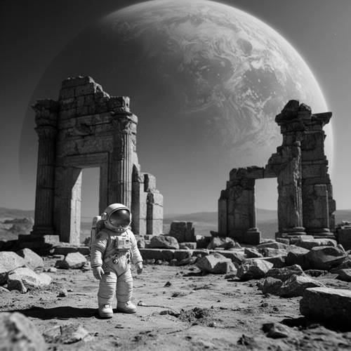
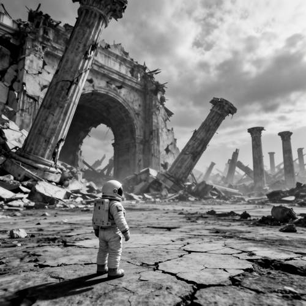
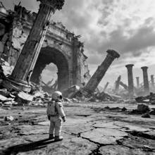
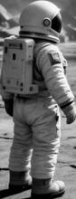

Style — Please generate a documentary black and white photo of a tiny astronau
Please generate a documentary black and white photo of a tiny astronaut standing next to the ancient ruins of a giant planet.

Direct — one call, no iteration

Continuum — Qwen3.8-27B + FLUX.2-dev
Judge — Direct
PASSStyle — The image is rendered in black and white. It features sharp focus, high detail, and realistic lighting with defined shadows, particularly on the astronaut's suit, the ground, and the stone ruins. This combination of elements gives the image the quality of a photograph, aligning with the 'documentary black and white photo' style.
FAILAttribute - Size — The image depicts a very large planet in the sky, which fills a significant portion of the background, fulfilling the 'giant planet' aspect. In the foreground, there is an astronaut standing near ancient ruins. The astronaut appears to be of a normal human scale relative to the stone structures, such as the visible doorways. The astronaut does not appear exceptionally small or 'tiny' in comparison to the immediate surroundings of the ruins.
Judge — Continuum
PASSStyle — The image is presented in black and white, utilizing a full grayscale palette. The composition and realistic textures of the ground, astronaut suit, and crumbling architecture give it the appearance of a photograph, and the subject matter aligns with a documentary style.
PASSAttribute - Size — The image shows an astronaut in the foreground who is diminutive in comparison to the surrounding environment. The background is filled with massive, crumbling architectural structures, including colossal columns and a huge archway, which dwarf the astronaut, thereby establishing the 'tiny' scale of the astronaut and the 'giant' scale of the ruins.
What the agent did
Thinking
Let me try to parse this prompt: "a documentary-style black-and-white photograph of a tiny astronaut standing next to ancient ruins of a giant planet." Interpretation: black-and-white documentary photo style, a tiny astronaut standing next to ancient ruins. The "giant planet" — the ruins are those of a giant planet. Probably a tiny astronaut on the ruins of a colossal planet. "A tiny astronaut standing next to ancient ruins of a giant planet" — the ruins belong to a giant planet. So, the composition is: an extremely small astronaut figure (in terms of scale) standing next to the ruins — colossal ancient structures — and the giant planet may be looming in the background, or the ruins themselves may be those of the planet. I think the best interpretation is this: a black-and-white documentary photograph, a tiny astronaut standing on top of / next to the ancient ruins of a giant (colossal) planet — that is, gigantic ancient structures, maybe with a planet in the background. "Ancient ruins of a giant planet" — the ruins of the planet itself, as if the planet has crumbled into ancient ruins. So, massive broken architecture, crumbling megastructures, and a tiny astronaut next to them for a sense of scale. This is probably a generation task (the user is asking to generate an image). Let me generate it with flux2-dev. Prompt: "black-and-white documentary photograph, an extremely tiny astronaut standing next to colossal ancient ruins of a giant planet — giant crumbling architecture, broken stone monoliths, an astronaut figure for scale, high-contrast black and white, grainy film, photojournalistic style." Let me write a good generation prompt: "black-and-white documentary photograph, a lone extremely tiny astronaut in a spacesuit standing next to the ancient ruins of a giant planet — colossal crumbling stone architecture, giant broken arches and fallen columns, the shattered husk of a vast world, the astronaut small against the immense ruins, high-contrast monochrome, film grain, photojournalistic composition, dramatic sky, realistic detail" I need to make sure it reads as a photograph. Use a documentary-style photo description. Let me generate at a 1024x1024 default, or at a widescreen aspect ratio? The harness controls the size. Default 1024x1024. For a documentary photo, landscape might be better, but the size is controlled by the harness — I can pass width/height. The policy says "image size is fixed for comparison" — meaning I shouldn't try to change it. Let me just use the default. Let me generate it.
Step 1 — `generate_image`
{
"model": "flux2-dev",
"prompt": "Black and white documentary photograph, photojournalistic style: a single tiny astronaut in a full spacesuit standing on cracked ground beside the ancient ruins of a giant planet \u2014 colossal crumbling architecture, giant broken arches, toppled monolithic columns, shattered mega-structures stretching into the distance, the small astronaut dwarfed by the immense scale of the ruins, dramatic cloudy sky, high-contrast monochrome, fine film grain, realistic texture, somber and haunting mood"
}
Result img_0

Thinking
The image turned out well: black and white, a small astronaut standing next to a vast ancient ruin, documentary-style photo aesthetic with film grain. Let me check a few details: the astronaut's figure looks fine. One point: "ancient ruin of a giant planet"—the ruin is there, and the sense of scale is good too. The image is black and white, documentary-style, grainy. Let me inspect the astronaut area to confirm there are no artifacts.
Model
The first generation looks promising. Let me inspect the astronaut and the ruin details at full resolution to check for artifacts.
Step 2 — `inspect_region`
{
"image": "img_0",
"roi": "the astronaut"
}
Result img_1

Thinking
The astronaut looks clean: detailed spacesuit, backpack, helmet, boots, no visible artifacts. The image is black and white, documentary-style, and has a strong sense of scale. This matches the prompt: "a small astronaut standing next to ancient ruins of a giant planet, a documentary-style black-and-white photograph." The ruins are colossal and ancient-looking (arches, columns). Black and white—yes. Documentary style—yes, there's a grainy film look. This is a good result. Mark this as the best and stop—no clear defects worth fixing. The sense of scale is great, and the composition is solid. Should I edit anything? Maybe I could enhance the "giant planet" aspect—the ruins could be the ruins of the planet itself. The current image reads as ancient ruins with a sense of scale, which satisfies "ancient ruins of a giant planet" (ruins on the scale of a giant planet). The prompt is somewhat ambiguous, but the current image fits well. Following "good enough is the stopping condition," mark it and finish.
Model
The astronaut is rendering cleanly — no deformed limbs, a detailed spacesuit, helmet, backpack, and boots, all in convincing monochrome. The full frame has a powerful sense of scale (the small figure and the massive ruined arches/columns), a documentary-style grainy texture, and strict black-and-white contrast. All the requested elements are in place, so this is a result worth submitting.
Step 3 — `mark_best`
{
"image": "img_0",
"reason": "Black and white documentary-style photo with a tiny detailed astronaut standing beside colossal ancient ruins, strong scale contrast, clean rendering with no visible artifacts."
}
Thinking
Done. Final summary for the user.
Model
Done. The image is a grainy black-and-white documentary photograph: a lone, tiny astronaut in a full spacesuit stands on cracked ground before the vast ancient ruins of a giant planet — a broken monumental arch, toppled monolithic columns, and shattered mega-structures receding into the distance. The strong scale contrast, film grain, and high-contrast monochrome tone give it the somber, photojournalistic feel you asked for. I've marked it as the best result.